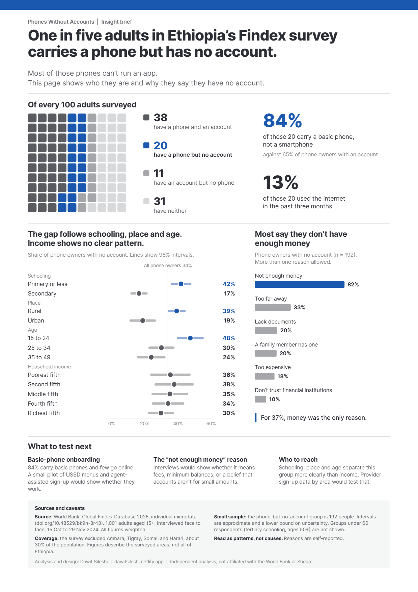

Phones Without Accounts: A4 print brief
The brief on one printed page, for a meeting or a partner roundtable: the same findings and caveats as the web version, set for paper.
- Format
- A4, CMYK, 3 mm bleed, print-ready PDF
- Built with
- Adobe Illustrator and an AI-assisted script
- Data
- World Bank Global Findex 2025 microdata, surveyed areas only. Read the web brief

How it was made
Why print. Partners and regulators still take printed briefs into meetings, and a web page doesn't print well. So I set the same content on one A4 page, with the coverage note and caveats kept on the page.
How I built it. I set up the print document in Illustrator (A4, 3 mm bleed, CMYK swatches, Inter type styles) and produced the page with an AI-assisted script from a detailed layout spec. The script places every bar, dot and interval directly from the verified figures, so no data mark is drawn by eye, and the file opens and edits in Illustrator.
Checked before publishing. CMYK only, no transparency, fonts embedded, trim and bleed boxes set, and every figure matches the brief.
What I learned. Text lines up in print when it's placed by its baseline, not its text box. And chart marks should come from the data, never from the eye: in practice that means drawing them with a chart tool or from a spreadsheet of sizes, then designing around them.